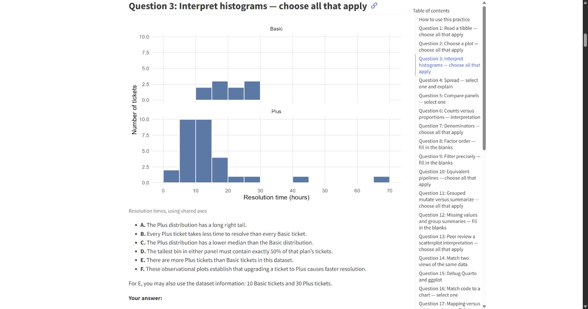

01 · STA199 / mock midterm + saved record
A practice paper.
A reason for every priority.
32 original questions. Six graphs. Editable R practice. A real learning record that remembers mistakes, removes stale weakness labels, and distinguishes assisted progress.
Open the original mock midterm